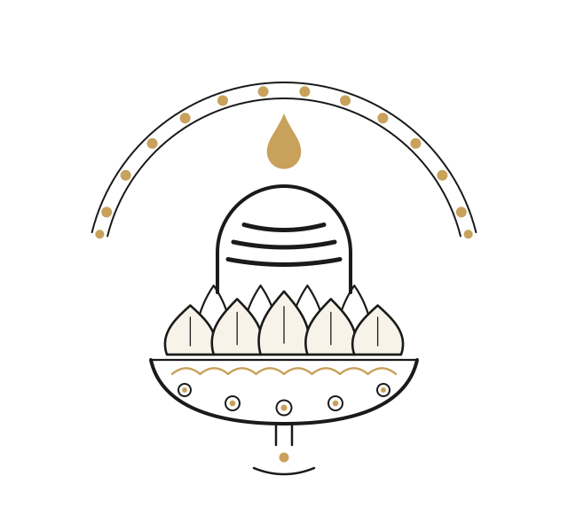
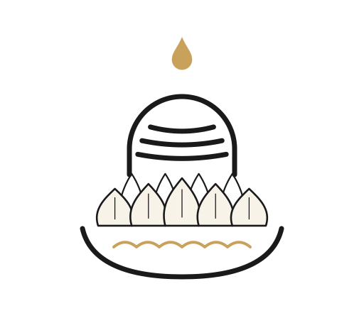
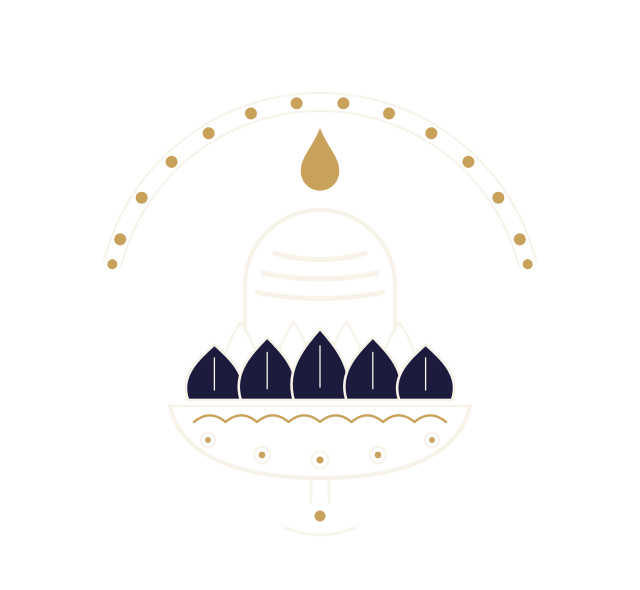
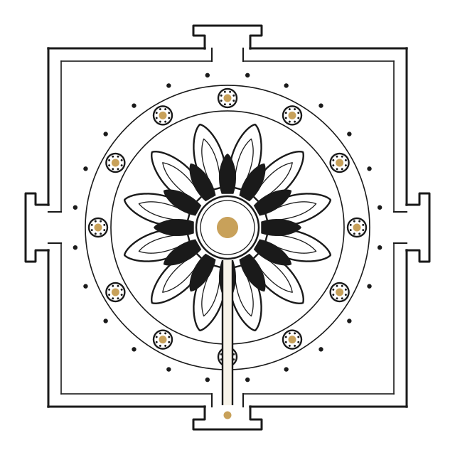
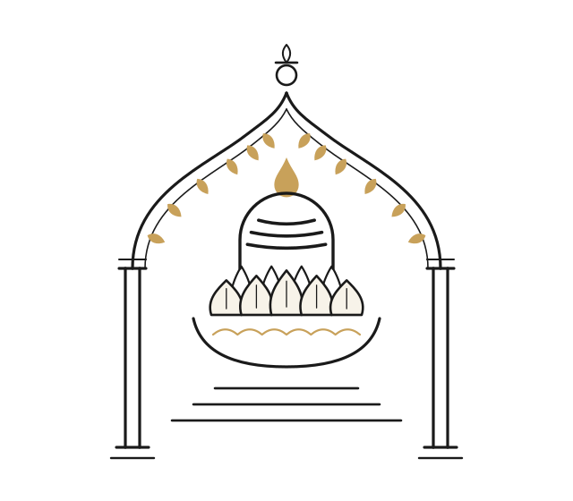

Founder's brief: drop "wholly minimal" — make it unmistakably a temple; remarkable; keep logo / icon / symbol craft. The vocabulary is now the temple's own: tripundra (the three vibhuti lines — the Shaiva signature), prabhavali (the garland-arch), kalasha, bhupura (the yantra's four-gated square court), mala beading, twin-line carved strokes. Gold stays reserved for god-points: bindu, drop, suns, buds. Each mark is a three-register system — the full mark, a derived icon, a derived glyph (64/32 px shown) — reduction by redrawing, never by shrinking. All geometry still obeys the rta-grid (12 / 24 / 30° / 15°).



1 · jyotirlinga — The emblem — tripundra-marked linga in the lotus cup; basin, waterline, carved sun medallions, the nali and the returned drop; a 12-sun prabhavali halo above.


2 · rtayantra — The seal — square bhupura with four T-gates, 24-bead mala, 12 carved suns, two-tier lotus (outlined over solid), and the nali channel leaving through the south gate.


3 · garbhagriha — The crest — the sanctum doorway: pillars, ogee prabhavali arch garlanded with 12 gold buds (the Adityas), kalasha finial, the Lord in his basin inside, threshold steps.